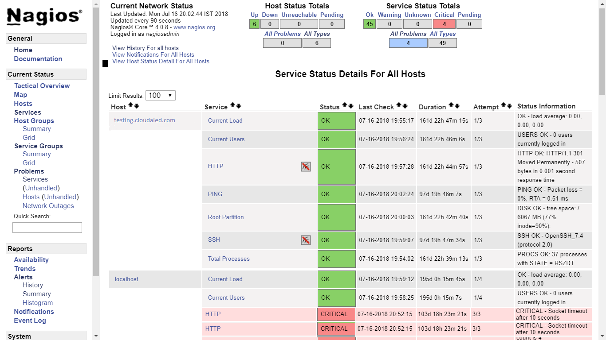

Overview
Want to track the performance, prevent and resolve issues, eliminate downtime? Monitor your networks, systems, applications & infrastructure with top recognized monitoring tools.Now address daily problems and solve your toughest IT challenges with our team. Our 24 x 7 Monitoring services & support plan will take away the burden of infrastructure monitoring and management away. Get updated with weekly or monthly reports of issues.
What do we Monitor ?
- Monitoring Web based Transactions
- Monitoring Performance of Websites
- Monitoring Urls
- Monitoring SSL Certificates
- Monitoring HTTP
